Proyeksi ortografik sistem koordinat 3-d ke sistem koordinat 2-d pada sistem koordinat kartesian akan diilustrasikan secara ringkas di sini [1], dengan dua istilah penerapannya terdapat pada denah (plan) dan tampak (elevation) [2]. Pada sistem koordinat kartesian 3-d terdapat tiga variabel koordinat, yaitu $x$, $y$, dan $z$ [3], yang hubungan arah antar ketiganya diberikan oleh aturan tangan kanan [4]. Beberapa proyeksi ortografik 3-d ke 2-d adalah sebagai berikut ini,
ID
0
1
2
3
0
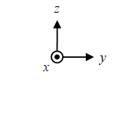
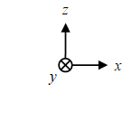
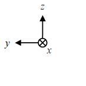
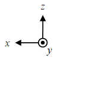
1
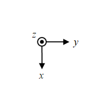
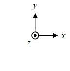
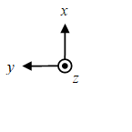
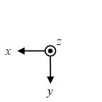
2
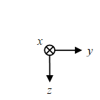
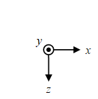
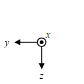
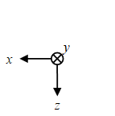
3
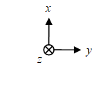
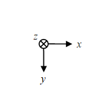
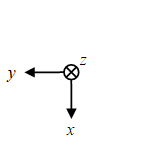
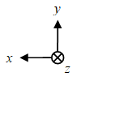
dengan ID gambar mengikuti notasi elemen pada matriks, e.g. gambar ujung kanan atas memiliki ID 03.
Selain ilustrasi dengan ID 00 - 33 di atas, masih terdapat banyak kemungkinan ilustrasi sistem koordinat kartesian 3-d yang dapat diproyeksikan ke 2-d secara perspektif [1].